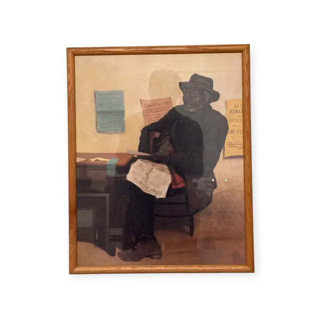
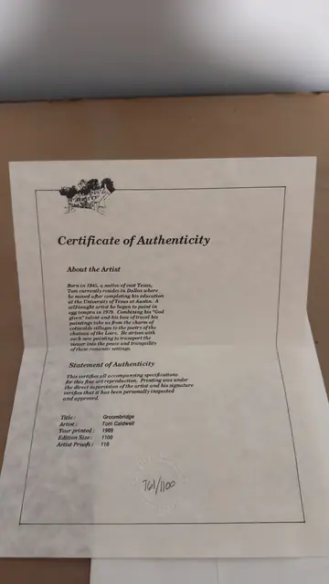
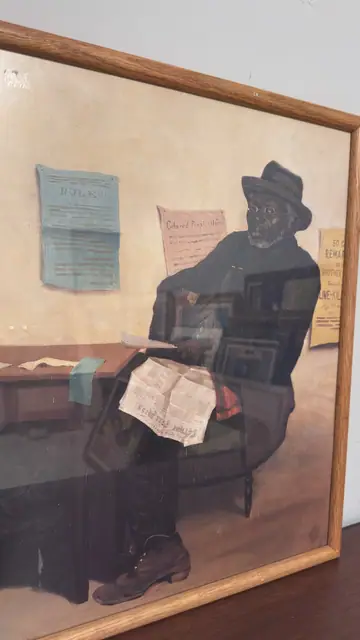

Paintings & Prints
Seated Man Reading Newspaper, Genre Scene, Framed
· late 19th century subject; the sheet itself probably a 20th-century reproduction
Price Upon Request



About the Item
An interior genre scene in warm sepia and ochre. An elderly man in a black overcoat, waistcoat and soft felt hat sits at an angle on a plain wooden chair, wire spectacles on his nose, holding an open newspaper across his knee; a heavy work boot juts into the foreground. Behind him a plaster wall carries four pinned notices - a blue printed sheet, a handbill headed 'Colored People's Union' and a yellow reward poster - and a table with papers and a blue book runs off to the left. The colouring is muted, almost monochrome brown, with the blue notice and a red flash at the sitter's pocket as the only accents. Medium: colour reproduction print (offset/photomechanical) on paper or board, glazed. Accompanied by a certificate: IMG_8853 is a certificate, but its text belongs to the Tom Caldwell print catalogued as A083, not to this picture. Inscribed on the reverse or mount: Within the picture, on the wall notices: 'RULES' (blue sheet, remaining lines illegible); 'Colored People's Union' (handbill above the sitter's shoulder); '50 C… / REWAR[D] / … / BROTHER … / President … / LIME-KIL[N] …' (yellow poster at the right, partly hidden by the frame). Condition: Surface shows overall warm discolouration and a faint vertical line at the right of the image; a few small dark flecks; no tears visible. Glass reflections obscure much of the surface.
Details
- Creation Year:
- late 19th century subject; the sheet itself probably a 20th-century reproduction
- Dimensions:
- Height: 21.25 in (53.98 cm)
Width: 17.0 in (43.18 cm)
outside of frame - Medium:
- colour reproduction print (offset/photomechanical) on paper or board, glazed
- Period:
- 20Th
- Condition:
- Offered in the condition shown in the photographs.
- Reference Number:
- VO-133
- Documentation:
- IMG_8853 is a certificate, but its text belongs to the Tom Caldwell print catalogued as A083, not to this picture.
- Gallery Location:
- Within the picture, on the wall notices: 'RULES' (blue sheet, remaining lines illegible); 'Colored People's Union' (handbill above the sitter's shoulder); '50 C… / REWAR[D] / … / BROTHER … / President … / LIME-KIL[N] …' (yellow poster at the right, partly hidden by the frame)